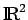
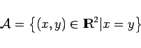
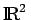
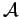
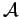
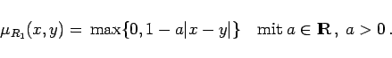
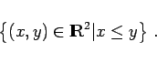
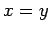
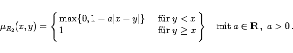
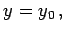

Inhalt Index DeskTop Bronstein

 Algebra und Diskrete Mathematik Fuzzy-Logik Fuzzy-wertige Relationen Fuzzy-Relationen
Algebra und Diskrete Mathematik Fuzzy-Logik Fuzzy-wertige Relationen Fuzzy-Relationen


Unscharfe oder fuzzy-wertige Relationen wie beispielsweise ,,ungefähr gleich``, ,,im wesentlichen grösser`` oder ,,im wesentlichen kleiner`` etc. spielen für die praktischen Anwendungen eine große Rolle. Sie werden als Relationen zwischen Zahlen und demzufolge als Teilmengen im  erklärt. So läßt sich Gleichheit ,,=`` als Menge
|  | (5.385) |
erklären, d.h. durch eine Gerade y=x im .
Zur Modellierung der Relation R1 ,,ungefähr gleich`` kann angrenzend an ein scharfes Gebiet (hier beschrieben durch die Gerade im , allgemein im  , mit der Toleranz ) eine unscharfe Übergangszone zugelassen und verlangt werden, daß die Zugehörigkeitsfunktion in einer gewünschten Art (linear oder quadratisch) mit abnehmender Zugehörigkeit gegen Null geht. Eine lineare Abnahme kann wie folgt modelliert werden:
, mit der Toleranz ) eine unscharfe Übergangszone zugelassen und verlangt werden, daß die Zugehörigkeitsfunktion in einer gewünschten Art (linear oder quadratisch) mit abnehmender Zugehörigkeit gegen Null geht. Eine lineare Abnahme kann wie folgt modelliert werden:
|  | (5.386) |
Zur Modellierung der Relation R2 ,,im wesentlichen größer als`` ist es zweckmäßig, von der scharfen Relation ,, `` auszugehen. Die zugehörige Wertemenge ist dann gegeben durch
`` auszugehen. Die zugehörige Wertemenge ist dann gegeben durch
|  | (5.387) |
Sie beschreibt das scharfe Gebiet oberhalb der Geraden . Die Modellierung ,,im wesentlichen`` bedeutet, daß geringe Unterschreitungen in ein Randgebiet unterhalb der Halbebene, gekennzeichnet durch die Gerade, noch akzeptiert werden. Die Modellierung von R2 ergibt sich dann zu
|  | (5.388) |
Setzt man für eine der Variablen einen festen Wert ein, z.B.  dann folgt aus dieser modellmäßigen Beschreibung unmittelbar, daß R2 als unscharfe Schranke bezüglich der anderen Variablen interpretiert werden kann. Unscharfe Schranken besitzen im Bereich der unscharfen mathematischen Optimierung, der qualitativen Datenanalyse und der Musterklassifikation praktische Bedeutung.
Die vorstehende Betrachtung zeigt, daß das Konzept der unscharfen Relationen, d.h. der unscharfen Beziehungen zwischen mehreren Objekten, mit Hilfe unscharfer Mengen aufgebaut werden kann. Im folgenden werden Grundtatsachen zweistelliger Relationen über einem Grundbereich behandelt, dessen Elemente geordnete Paare sind.